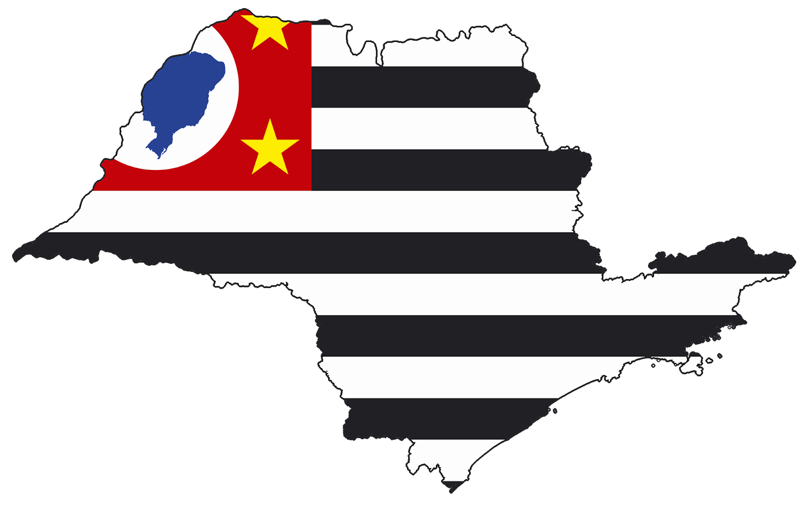

Locais atendidos

São Paulo
Benefícios da entrega via Drone
Alguns dos principais benefícios são o fato de não haver trânsito nas rotas feitas pelos drones, o fato de não gastar combustível e nem emitir gases poluentes. Trechos que antes eram feitos entre 25 e 55 minutos agora podem ser feitos em 5 minutos! Assim o prazo da entrega fica mais eficiente. Sem falar que regiões menos acessíveis, como morros e ladeiras, agora podem receber entregas com mais facilidade. Pessoas que possuem limitações físicas e não podem sair de casa também são beneficiadas pela tecnologia. Os drones são desenvolvidos especialmente para armazenagem, fixação e transporte seguro. A mercadoria é acoplada manualmente e quando o drone chega perto do chão a caixa é ejetada de forma automática.